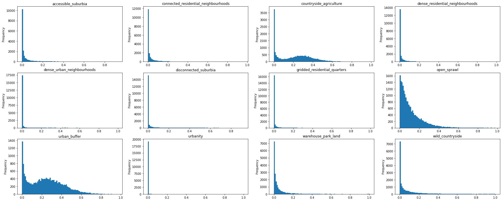

import numpy
import tensorflow as tf
import json
import pandas
from tensorflow import keras
from tensorflow.keras import layers
from tensorflow.keras.applications.efficientnet import preprocess_input, decode_predictions
chips = numpy.load('../../chips/32_nw.npy')
chips.shape
(103050, 32, 32, 3)
sorter = numpy.random.choice(numpy.arange(0, len(chips)), len(chips))
chips = chips[sorter]
target = pandas.read_parquet("../../chips/32_nw/chip_proportions.pq").drop(columns="geometry").iloc[sorter]
target.sum().plot.bar()
<AxesSubplot:>
target.columns
Index(['signature_type_0_0', 'signature_type_1_0', 'signature_type_3_0',
'signature_type_4_0', 'signature_type_5_0', 'signature_type_6_0',
'signature_type_7_0', 'signature_type_8_0', 'signature_type_2_0',
'signature_type_2_1', 'signature_type_2_2', 'signature_type_9_0',
'signature_type_9_2', 'signature_type_9_4'],
dtype='object')
with open('../../urbangrammar_samba/spatial_signatures/ai/gb_32_balanced_named_v2/json/efficientnet_pooling_256_12.json') as f:
d = json.load(f)
cd2nm = {}
for codes, name in zip(d['meta_class_map'], d['meta_class_names']):
for code in codes:
cd2nm[f'signature_type_{code}'] = name.lower().replace(" ", "_").replace("/", "_")
cd2nm = pandas.Series(cd2nm)
target = target.rename(columns=cd2nm).groupby(level=0, axis=1).sum()
mask = target.sum(axis=1) > 0.5
target_no_water = target[mask]
chips = chips[mask]
batch_size = 32
split = int(chips.shape[0] * 0.8)
train_dataset = tf.data.Dataset.from_tensor_slices((chips[:split], target_no_water.values[:split]))
test_dataset = tf.data.Dataset.from_tensor_slices((chips[split:], target_no_water.values[split:]))
train_dataset = train_dataset.batch(batch_size=batch_size)
test_dataset = test_dataset.batch(batch_size=batch_size)
preprocessing_and_augmentation = keras.Sequential(
[
layers.Resizing(224, 224, crop_to_aspect_ratio=True),
]
)
base_model = keras.applications.EfficientNetB4(
weights="imagenet", # Load weights pre-trained on ImageNet.
input_shape=(224, 224, 3),
include_top=False, # Do not include the ImageNet classifier at the top.
)
# Freeze the base_model
base_model.trainable = False
# Create new model on top
inputs = keras.Input(shape=(32, 32, 3))
x = preprocessing_and_augmentation(inputs)
x = preprocess_input(x)
# The base model contains batchnorm layers. We want to keep them in inference mode
# when we unfreeze the base model for fine-tuning, so we make sure that the
# base_model is running in inference mode here.
x = base_model(x, training=False)
x = layers.GlobalAveragePooling2D()(x)
x = layers.Dense(128, activation='relu')(x)
predictions = layers.Dense(12, activation="sigmoid")(x)
model = keras.Model(inputs, predictions)
model.summary()
Model: "model_5"
_________________________________________________________________
Layer (type) Output Shape Param #
=================================================================
input_12 (InputLayer) [(None, 32, 32, 3)] 0
sequential_3 (Sequential) (None, 224, 224, 3) 0
efficientnetb4 (Functional) (None, 7, 7, 1792) 17673823
global_average_pooling2d_5 (None, 1792) 0
(GlobalAveragePooling2D)
dense_10 (Dense) (None, 128) 229504
dense_11 (Dense) (None, 12) 1548
=================================================================
Total params: 17,904,875
Trainable params: 231,052
Non-trainable params: 17,673,823
_________________________________________________________________
model.compile(
optimizer="adam",
loss="mse",
metrics=["mean_squared_error", "accuracy"],
)
target.columns
Index(['accessible_suburbia', 'connected_residential_neighbourhoods',
'countryside_agriculture', 'dense_residential_neighbourhoods',
'dense_urban_neighbourhoods', 'disconnected_suburbia',
'gridded_residential_quarters', 'open_sprawl', 'urban_buffer',
'urbanity', 'warehouse_park_land', 'wild_countryside'],
dtype='object')
target.sum().plot.bar()
<AxesSubplot:>
weights = target.sum().max() / target.sum()
# class_weights = {
# 0: 1,
# 1: 5,
# 2: 2,
# 3: 5,
# 4: 5,
# 5: 10,
# 6: 1,
# 7: 10,
# 8: 10,
# 9: 10,
# 10: 10,
# 11: 20,
# 12: 20,
# 13: 20,
# }
class_weights = {k:w for k, w in enumerate(weights.values)}
epochs = 5
history = model.fit(train_dataset, epochs=epochs, validation_data=test_dataset, class_weight=class_weights)
Epoch 1/5
2454/2454 [==============================] - 322s 129ms/step - loss: 0.2274 - mean_squared_error: 0.0567 - accuracy: 0.3443 - val_loss: 0.0534 - val_mean_squared_error: 0.0534 - val_accuracy: 0.3782
Epoch 2/5
2454/2454 [==============================] - 317s 129ms/step - loss: 0.2021 - mean_squared_error: 0.0542 - accuracy: 0.3720 - val_loss: 0.0527 - val_mean_squared_error: 0.0527 - val_accuracy: 0.3894
Epoch 3/5
2454/2454 [==============================] - 316s 129ms/step - loss: 0.1885 - mean_squared_error: 0.0531 - accuracy: 0.3905 - val_loss: 0.0527 - val_mean_squared_error: 0.0527 - val_accuracy: 0.3919
Epoch 4/5
2171/2454 [=========================>....] - ETA: 29s - loss: 0.1773 - mean_squared_error: 0.0522 - accuracy: 0.4060
IOPub message rate exceeded. The notebook server will temporarily stop sending output to the client in order to avoid crashing it. To change this limit, set the config variable `--NotebookApp.iopub_msg_rate_limit`. Current values: NotebookApp.iopub_msg_rate_limit=1000.0 (msgs/sec) NotebookApp.rate_limit_window=3.0 (secs)
y_pred_probs = model.predict(test_dataset)
y_pred = numpy.argmax(y_pred_probs, axis=1)
y = numpy.argmax(target_no_water.values[split:], axis=1)
def accuracy(y, y_pred):
a = tf.keras.metrics.Accuracy()
a.update_state(y, y_pred)
return a.result().numpy()
# accuracy(y, y_pred) # all classes and custom weights
0.4537603
accuracy(y, y_pred)
0.42691934
See the probability distributions
pandas.Series(y_pred_probs.sum(axis=1)).plot.hist(bins=100)
<AxesSubplot:ylabel='Frequency'>
pandas.Series(y_pred_probs.max(axis=1)).plot.hist(bins=100)
<AxesSubplot:ylabel='Frequency'>
import matplotlib.pyplot as plt
fig, axs = plt.subplots(3, 4, figsize=(30, 12))
for i, (n, ax) in enumerate(zip(target.columns, axs.flatten())):
pandas.Series(y_pred_probs[:, i]).plot.hist(bins=100, ax=ax)
ax.set_title(n)

def confusion_matrix(y, y_pred, n_classes):
cm = numpy.zeros((n_classes, n_classes), dtype=int)
pairs = numpy.vstack((y, y_pred)).T
for c1 in range(n_classes):
for c2 in range(n_classes):
cm[c1, c2] = ((pairs[:, 0] == c1) * (pairs[:, 1] == c2)).sum()
return cm
conf = confusion_matrix(y, y_pred, 12)
from itertools import product
fig, ax = plt.subplots(figsize=(12, 12))
a = conf
a = a / a.sum(axis=1)[:, numpy.newaxis]
a = pandas.DataFrame(a).values
ax.imshow(a, cmap="viridis", vmin=0, vmax=1)
for k, j in product(range(12), range(12)):
ax.text(j, k, "{:.2f}".format(a[k, j]),
ha="center", va="center", color="w")
plt.xticks(range(12),target.columns, rotation=90)
plt.yticks(range(12),target.columns)
([<matplotlib.axis.YTick at 0x7f2bc937a7c0>,
<matplotlib.axis.YTick at 0x7f2bc937a040>,
<matplotlib.axis.YTick at 0x7f2bc934a0d0>,
<matplotlib.axis.YTick at 0x7f2bca5042b0>,
<matplotlib.axis.YTick at 0x7f2bca504a00>,
<matplotlib.axis.YTick at 0x7f2bca53b190>,
<matplotlib.axis.YTick at 0x7f2bca53b8e0>,
<matplotlib.axis.YTick at 0x7f2bca53bb50>,
<matplotlib.axis.YTick at 0x7f2bca504cd0>,
<matplotlib.axis.YTick at 0x7f2bcad730d0>,
<matplotlib.axis.YTick at 0x7f2bca533340>,
<matplotlib.axis.YTick at 0x7f2bca533a90>],
[Text(0, 0, 'accessible_suburbia'),
Text(0, 1, 'connected_residential_neighbourhoods'),
Text(0, 2, 'countryside_agriculture'),
Text(0, 3, 'dense_residential_neighbourhoods'),
Text(0, 4, 'dense_urban_neighbourhoods'),
Text(0, 5, 'disconnected_suburbia'),
Text(0, 6, 'gridded_residential_quarters'),
Text(0, 7, 'open_sprawl'),
Text(0, 8, 'urban_buffer'),
Text(0, 9, 'urbanity'),
Text(0, 10, 'warehouse_park_land'),
Text(0, 11, 'wild_countryside')])
No class weights
base_model = keras.applications.EfficientNetB4(
weights="imagenet", # Load weights pre-trained on ImageNet.
input_shape=(224, 224, 3),
include_top=False, # Do not include the ImageNet classifier at the top.
)
# Freeze the base_model
base_model.trainable = False
# Create new model on top
inputs = keras.Input(shape=(32, 32, 3))
x = preprocessing_and_augmentation(inputs)
x = preprocess_input(x)
# The base model contains batchnorm layers. We want to keep them in inference mode
# when we unfreeze the base model for fine-tuning, so we make sure that the
# base_model is running in inference mode here.
x = base_model(x, training=False)
x = layers.GlobalAveragePooling2D()(x)
x = layers.Dense(128, activation='relu')(x)
predictions = layers.Dense(14, activation="sigmoid")(x)
model = keras.Model(inputs, predictions)
model.summary()
Model: "model_2"
_________________________________________________________________
Layer (type) Output Shape Param #
=================================================================
input_6 (InputLayer) [(None, 32, 32, 3)] 0
sequential_1 (Sequential) (None, 224, 224, 3) 0
efficientnetb4 (Functional) (None, 7, 7, 1792) 17673823
global_average_pooling2d_2 (None, 1792) 0
(GlobalAveragePooling2D)
dense_4 (Dense) (None, 128) 229504
dense_5 (Dense) (None, 14) 1806
=================================================================
Total params: 17,905,133
Trainable params: 231,310
Non-trainable params: 17,673,823
_________________________________________________________________
model.compile(
optimizer="adam",
loss="mse",
metrics=["mean_squared_error", "accuracy"],
)
epochs = 2
history = model.fit(train_dataset, epochs=epochs, validation_data=test_dataset)
Epoch 1/2
2577/2577 [==============================] - 340s 130ms/step - loss: 0.0385 - mean_squared_error: 0.0385 - accuracy: 0.4639 - val_loss: 0.0369 - val_mean_squared_error: 0.0369 - val_accuracy: 0.4751
Epoch 2/2
2577/2577 [==============================] - 335s 130ms/step - loss: 0.0361 - mean_squared_error: 0.0361 - accuracy: 0.4994 - val_loss: 0.0362 - val_mean_squared_error: 0.0362 - val_accuracy: 0.5114
y_pred_probs_no_w = model.predict(test_dataset)
y_pred_no_w = numpy.argmax(y_pred_probs_no_w, axis=1)
accuracy(y, y_pred_no_w)
0.51135373
conf = confusion_matrix(y, y_pred_no_w, 14)
from itertools import product
fig, ax = plt.subplots(figsize=(12, 12))
a = conf
a = a / a.sum(axis=1)[:, numpy.newaxis]
a = pandas.DataFrame(a).values
ax.imshow(a, cmap="viridis", vmin=0, vmax=1)
for k, j in product(range(14), range(14)):
ax.text(j, k, "{:.2f}".format(a[k, j]),
ha="center", va="center", color="w")
plt.xticks(range(14),types, rotation=90)
plt.yticks(range(14),types)
([<matplotlib.axis.YTick at 0x7f2bbf78d520>,
<matplotlib.axis.YTick at 0x7f2bbf785d60>,
<matplotlib.axis.YTick at 0x7f2bbf7852e0>,
<matplotlib.axis.YTick at 0x7f2bbf5bfca0>,
<matplotlib.axis.YTick at 0x7f2bbf638970>,
<matplotlib.axis.YTick at 0x7f2bbf632280>,
<matplotlib.axis.YTick at 0x7f2bbf5c7df0>,
<matplotlib.axis.YTick at 0x7f2bbf5cd580>,
<matplotlib.axis.YTick at 0x7f2bbf5cdcd0>,
<matplotlib.axis.YTick at 0x7f2bbf5d2460>,
<matplotlib.axis.YTick at 0x7f2bbf5cd970>,
<matplotlib.axis.YTick at 0x7f2bbf5c73d0>,
<matplotlib.axis.YTick at 0x7f2bbf5d2a60>,
<matplotlib.axis.YTick at 0x7f2bbf5da070>],
[Text(0, 0, 'signature_type_0_0'),
Text(0, 1, 'signature_type_1_0'),
Text(0, 2, 'signature_type_3_0'),
Text(0, 3, 'signature_type_4_0'),
Text(0, 4, 'signature_type_5_0'),
Text(0, 5, 'signature_type_6_0'),
Text(0, 6, 'signature_type_7_0'),
Text(0, 7, 'signature_type_8_0'),
Text(0, 8, 'signature_type_2_0'),
Text(0, 9, 'signature_type_2_1'),
Text(0, 10, 'signature_type_2_2'),
Text(0, 11, 'signature_type_9_0'),
Text(0, 12, 'signature_type_9_2'),
Text(0, 13, 'signature_type_9_4')])